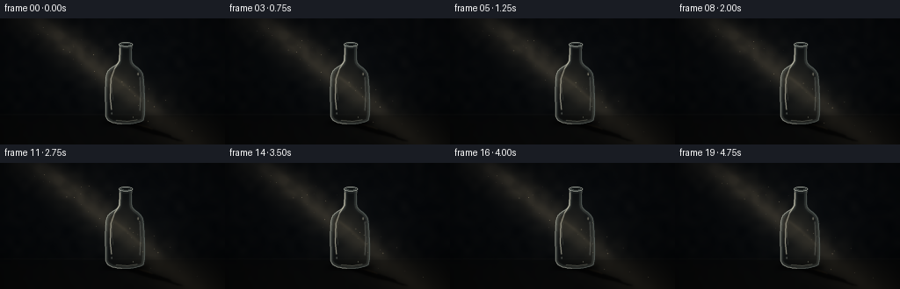
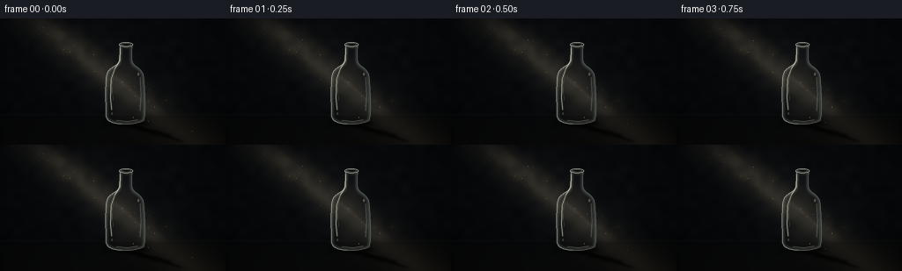

CODING AGENTS AS PIXEL WORLD MODELS
traex/GPT-5.6-Sol · phygen_043
点击播放 · 原生 RGB 像素
逐轮保存的候选
回放视频、检查图与代码变化。
每份候选均可单独播放。实际图片检查记录在下方工具轨迹中。
候选 01播放与检查图
点击播放 · 原生 RGB 像素


展开代码变化
--- 上一保存版本 +++ 本次保存版本 @@ -0,0 +1,238 @@ +"""Procedural rendering of a glass bottle caught in a diagonal light shaft. + +The scene is deliberately rendered at 3x resolution and downsampled. This +keeps the glass outlines, dust and the soft projected shadow clean at the +small target resolution without relying on any external assets. +""" + +from pathlib import Path + +import cv2 +import numpy as np + +import artifact_io + + +W, H, N = 256, 144, 20 +S = 3 +WW, HH = W * S, H * S + + +def bezier(p0, p1, p2, p3, n=20): + t = np.linspace(0.0, 1.0, n, endpoint=False)[:, None] + return (1-t)**3*p0 + 3*(1-t)**2*t*p1 + 3*(1-t)*t**2*p2 + t**3*p3 + + +def bottle_outline(): + """Clockwise, smooth bottle silhouette in logical image coordinates.""" + pieces = [ + bezier(np.array([136., 30.]), np.array([136., 38.]), np.array([136., 44.]), np.array([135., 49.])), + bezier(np.array([135., 49.]), np.array([134., 54.]), np.array([123., 55.]), np.array([121., 64.])), + bezier(np.array([121., 64.]), np.array([119., 75.]), np.array([120., 98.]), np.array([120., 109.])), + bezier(np.array([120., 109.]), np.array([120., 116.]), np.array([125., 119.]), np.array([135., 120.])), + bezier(np.array([135., 120.]), np.array([145., 121.]), np.array([158., 120.]), np.array([163., 116.])), + bezier(np.array([163., 116.]), np.array([166., 110.]), np.array([164., 77.]), np.array([163., 66.])), + bezier(np.array([163., 66.]), np.array([162., 57.]), np.array([151., 54.]), np.array([150., 49.])), + bezier(np.array([150., 49.]), np.array([149., 42.]), np.array([150., 36.]), np.array([150., 30.])), + ] + return np.vstack(pieces) + + +OUTLINE = bottle_outline() + + +def poly_mask(points, blur=0.0): + m = np.zeros((HH, WW), np.float32) + pts = np.round(points * S).astype(np.int32) + cv2.fillPoly(m, [pts], 1.0, lineType=cv2.LINE_AA) + if blur: + m = cv2.GaussianBlur(m, (0, 0), blur * S) + return np.clip(m, 0, 1) + + +def composite(im, color, alpha): + if np.ndim(color) == 1: + color = np.asarray(color, np.float32)[None, None, :] + im[:] = im * (1.0 - alpha[..., None]) + color * alpha[..., None] + + +def line_layer(im, pts, color, width, alpha=1.0, blur=0.0, closed=False): + layer = np.zeros((HH, WW), np.float32) + q = np.round(np.asarray(pts) * S).astype(np.int32) + cv2.polylines(layer, [q], closed, float(alpha), max(1, round(width*S)), cv2.LINE_AA) + if blur: + layer = cv2.GaussianBlur(layer, (0, 0), blur*S) + composite(im, np.array(color, np.float32), np.clip(layer, 0, 1)) + + +def ellipse_layer(im, center, axes, color, alpha=1., width=-1, blur=0.): + layer = np.zeros((HH, WW), np.float32) + c = tuple(np.round(np.asarray(center)*S).astype(int)) + a = tuple(np.maximum(1, np.round(np.asarray(axes)*S).astype(int))) + thick = -1 if width < 0 else max(1, round(width*S)) + cv2.ellipse(layer, c, a, 0, 0, 360, float(alpha), thick, cv2.LINE_AA) + if blur: + layer = cv2.GaussianBlur(layer, (0, 0), blur*S) + composite(im, np.array(color, np.float32), np.clip(layer, 0, 1)) + + +def make_static_noise(seed=4103): + rng = np.random.default_rng(seed) + n = rng.normal(0, 1, (HH, WW)).astype(np.float32) + fine = cv2.GaussianBlur(n, (0, 0), 0.45*S) + cloud = cv2.resize(rng.normal(0, 1, (18, 32)).astype(np.float32), (WW, HH), interpolation=cv2.INTER_CUBIC) + return fine, cloud + + +FINE_NOISE, CLOUD_NOISE = make_static_noise() +YY, XX = np.mgrid[0:HH, 0:WW].astype(np.float32) +X, Y = XX/S, YY/S + + +def render_frame(fi): + # Very small motion in the source makes the shaft and its shadow feel live, + # while the locked-off bottle remains stable. + phase = 2*np.pi*fi/N + light_shift = 1.15*np.sin(phase*0.72) + pulse = 0.975 + 0.025*np.sin(phase*0.83 + .4) + + # Almost-black blue/brown room, with just enough texture to retain depth. + vertical = (1.0 - Y/H)[..., None] + im = np.zeros((HH, WW, 3), np.float32) + im[:] = np.array([5.0, 7.0, 9.0]) + im += vertical * np.array([3.5, 4.0, 5.0]) + im += CLOUD_NOISE[..., None] * np.array([1.1, 1.0, .8]) + im += FINE_NOISE[..., None] * .42 + + # Sparse, soft background glow behind the bottle. + halo = np.exp(-(((X-140)/76)**2 + ((Y-72)/69)**2)*2.2) + im += halo[..., None] * np.array([3.0, 3.4, 3.7]) + + # Diagonal volumetric beam. Axis runs from upper-left to lower-right. + axis = 42.0 + light_shift + 1.25*Y + d = X-axis + broad = np.exp(-0.5*(d/25.0)**2) + core = np.exp(-0.5*((d+2.0)/11.5)**2) + # The slight longitudinal falloff implies an offscreen source above-left. + along = np.clip(1.08 - .0020*Y, .72, 1.1) + shaft = np.clip((0.38*broad + .23*core)*along*pulse, 0, .55) + shaft *= np.clip((Y+16)/31, 0, 1) + shaft *= 0.91 + 0.09*np.clip(CLOUD_NOISE, -1, 1) + composite(im, np.array([69., 65., 55.]), shaft) + # A pearly center to make the ray read clearly without flattening the dark. + im += (core*7.0*pulse)[..., None] * np.array([1.0, .93, .78]) + + # Matte table/floor occupying the bottom fifth of the image. + floor_edge = 109.5 + floor = 1/(1+np.exp(-(Y-floor_edge)/1.5)) + floor_color = np.empty_like(im) + floor_color[:] = np.array([7., 8., 8.5]) + floor_color += np.clip((Y-floor_edge)/35, 0, 1)[..., None] * np.array([5., 4., 3.]) + # Beam's diffuse footprint on the tabletop. + footprint = np.exp(-0.5*((X-(42+1.25*Y+light_shift))/29)**2) * floor + floor_color += footprint[..., None] * np.array([17., 15., 11.]) + im = im*(1-floor[..., None]*.73) + floor_color*(floor[..., None]*.73) + horizon = np.exp(-0.5*((Y-floor_edge)/.72)**2) + im += horizon[..., None]*np.array([4.2, 4.0, 3.6]) + + # Project the bottle contour along the beam onto the floor. The neck at the + # far right of this transformed silhouette makes it unmistakably a bottle + # shadow, rather than a generic ellipse. + sh = OUTLINE.copy() + sy = sh[:, 1] + sx = sh[:, 0] + sway = light_shift*.55 + shadow_pts = np.column_stack([ + 143 + (sx-143)*.55 + (119-sy)*(.70+sway*.0015), + 119 + (119-sy)*.235 + (sx-143)*.050 + ]) + # broad penumbra, then a crisp umbra + shadow_soft = poly_mask(shadow_pts, 3.0) + composite(im, np.array([2.0, 2.2, 2.3]), shadow_soft*.60) + shadow_core = poly_mask(shadow_pts, .75) + composite(im, np.array([1.2, 1.4, 1.6]), shadow_core*.64) + # Amber caustic sliver at the shadow's lower rim. + line_layer(im, shadow_pts[71:111], [76, 61, 37], 0.6, .30, .7, False) + ellipse_layer(im, [142.5, 119], [27, 3.5], [0.7, .8, .9], .72, -1, 2.5) + ellipse_layer(im, [143, 119], [18, 1.6], [0.5, .6, .7], .84, -1, .7) + + # Save pre-glass scene and refract it through the bottle's curved body. + mask = poly_mask(OUTLINE, .22) + inside_u8 = (mask > .4).astype(np.uint8) + dist = cv2.distanceTransform(inside_u8, cv2.DIST_L2, 5)/S + # A horizontal displacement that reverses near either wall resembles a + # thick, curved clear bottle. Vertical ripple is subtle and stationary. + displacement = 2.4*np.sin(np.clip((X-120)/44, 0, 1)*2*np.pi) + displacement += .45*np.sin(Y*.19) + mapx = (XX + displacement*S).astype(np.float32) + mapy = (YY + .28*np.sin(X*.23)*S).astype(np.float32) + refracted = cv2.remap(im, mapx, mapy, cv2.INTER_LINEAR, borderMode=cv2.BORDER_REFLECT) + glass_mix = mask*(.49 + .08*np.exp(-dist/5.5)) + im = im*(1-glass_mix[..., None]) + refracted*glass_mix[..., None] + # Cool, transparent body tint and dark thickness close to its sidewalls. + body_tint = mask*(.080 + .105*np.exp(-dist/3.3)) + composite(im, np.array([22., 31., 33.]), body_tint) + center_glow = mask*np.exp(-0.5*((X-145)/12)**2)*np.exp(-0.5*((Y-79)/35)**2)*.075 + composite(im, np.array([109., 103., 85.]), center_glow) + + # Layered rims are the main visual vocabulary of transparent glass. + rim = mask*np.exp(-dist/1.12)*.82 + composite(im, np.array([153., 161., 154.]), rim) + inner_rim = mask*np.exp(-((dist-2.4)/.62)**2)*.19 + composite(im, np.array([93., 110., 110.]), inner_rim) + # Bright and dark opposing contour strokes preserve dimensionality. + line_layer(im, OUTLINE[0:83], [187, 197, 190], .58, .52, .28, False) + line_layer(im, OUTLINE[84:153], [71, 85, 87], .75, .53, .24, False) + + # Long speculars on neck and body, broken as in imperfect old glass. + left_hi = np.array([[136.3,34],[136.0,48],[130.2,57],[126.0,69],[125.3,91],[126.5,104]]) + line_layer(im, left_hi, [219, 220, 203], .82, .78, .42) + line_layer(im, [[128.0,67],[127.5,83],[128.6,94]], [164,174,165], .45, .42, .3) + line_layer(im, [[159.1,67],[160.0,87],[159.0,105]], [170,181,177], .52, .38, .45) + line_layer(im, [[132,116.3],[145,117.5],[156,115.8]], [166,172,159], .60, .42, .35) + # A refracted shard of the diagonal ray inside the body. + line_layer(im, [[124,61],[130,67],[142,76],[154,87],[161,94]], [150,137,108], 1.15, .16*pulse, 1.2) + + # Open mouth: dark bore bounded by two luminous glass ellipses. + ellipse_layer(im, [143,29.7], [7.5,2.25], [4,6,7], .90, -1, .18) + ellipse_layer(im, [143,29.6], [7.6,2.3], [183,193,188], .76, .78, .23) + ellipse_layer(im, [143,29.7], [5.8,1.18], [101,115,114], .58, .55, .18) + ellipse_layer(im, [143,32.4], [7.2,1.55], [127,141,139], .44, .48, .22) + # Little molded imperfections / glints. + ellipse_layer(im, [157.1,63.2], [.78,1.55], [210,210,190], .47, -1, .45) + ellipse_layer(im, [127.0,108.2], [.6,1.0], [169,181,174], .37, -1, .30) + ellipse_layer(im, [151.4,112.5], [.38,.52], [190,193,174], .38, -1, .18) + + # Suspended dust moves slowly with the shaft. Deterministic particles avoid + # any frame-to-frame flicker. + rng = np.random.default_rng(917) + for k in range(34): + py0 = rng.uniform(5, 132) + px0 = 42 + 1.25*py0 + rng.normal(0, 14) + speed = rng.uniform(.18, .70) + px = px0 + speed*fi + 1.2*np.sin(.31*fi + k) + py = (py0 + rng.uniform(.08,.35)*fi) % 139 + # Only points geometrically within the visible shaft. + if -7 < px < 263: + r = rng.uniform(.17, .55) + a = rng.uniform(.12, .42) * (0.72+0.28*np.sin(.55*fi+k*1.7)**2) + ellipse_layer(im, [px,py], [r,r], [207,193,158], a, -1, r*.65) + + # Optical finish: vignette, restrained warm grade, and high-quality resize. + vignette = np.clip(1 - .46*((X-W/2)/(W*.70))**2 - .48*((Y-H/2)/(H*.76))**2, .55, 1) + im *= vignette[..., None] + im[..., 0] *= 1.025 + im[..., 2] *= .965 + im = np.clip(im, 0, 255).astype(np.uint8) + small = cv2.resize(im, (W,H), interpolation=cv2.INTER_LANCZOS4) + # cv2 arrays are merely numeric here; all colors have been authored RGB. + return small + + +def main(): + frames = np.stack([render_frame(i) for i in range(N)], axis=0).astype(np.uint8) + artifact_io.save(frames, Path(__file__).resolve().parent) + + +if __name__ == "__main__": + main()
可观测工具轨迹
实际执行的命令与返回图片。
命令 1exit 0
/bin/bash -lc "cat prompt.txt && printf '\\n---RULES---\\n' && cat GENERATION_RULES.md && printf '\\n---SPEC---\\n' && cat task_spec.json"
命令 2exit 1
/bin/bash -lc "find . -maxdepth 2 -type f -printf '%p\\n' | sort && printf '\\nTOOLS\\n' && command -v ffmpeg && command -v python3 && python3 - <<'PY'
try:
import cv2; print('cv2', cv2.__version__)
except Exception as e: print('no cv2',e)
try:
import PIL; print('PIL',PIL.__version__)
except Exception as e: print('no PIL',e)
PY"命令 3exit 0
/bin/bash -lc "cat artifact_io.py; printf '\\nBins:\\n'; command -v ffmpeg || true; command -v python3 || true; python3 - <<'PY' for m in ['numpy','PIL','cv2','imageio']: try: x=__import__(m); print(m,getattr(x,'__version__','ok')) except Exception as e: print(m,'NO',e) PY"
命令 4exit 0
/bin/bash -lc "python3 generate.py && ls -lh pixels.npz inspection.png index.html && python3 - <<'PY'
from PIL import Image
import numpy as np
x=np.array(Image.open('inspection.png')); print(x.shape,x.min(),x.max(),x.mean())
a=np.load('pixels.npz')['pixels']; print(a.shape,a.dtype)
PY"命令 5exit 0
/bin/bash -lc "python3 - <<'PY'
from PIL import Image
import numpy as np
for f in [0,5,10,15,19]:
a=np.array(Image.open(f'frames/{f:02}.png')).mean(2)
# thumbnail ASCII with nonlinear emphasis
b=np.array(Image.fromarray(a.astype('uint8')).resize((64,36)))
chars=' .,:;irsXA253hMHGS#9B&@'
z=np.clip((b/110)**.65*(len(chars)-1),0,len(chars)-1).astype(int)
print('\\nFRAME',f,' min/max/mean',a.min(),a.max(),a.mean())
for row in z: print(''.join(chars[v] for v in row))
PY"命令 6exit 0
/bin/bash -lc "python3 - <<'PY'
import numpy as np
from PIL import Image
f=np.stack([np.array(Image.open(f'frames/{i:02}.png')) for i in range(20)])
print('frames',f.shape,f.dtype)
print('temporal abs mean',np.abs(np.diff(f.astype(int),axis=0)).mean(), 'changed ratio',(np.diff(f,axis=0)"'!=0).any(3).mean())
print('"'luma percentiles',np.percentile(f.mean(3),[0,1,10,50,90,95,99,100]))
# Region diagnostics: bottle / expected projected shadow / background
for name,ys,xs in [('bottle',slice(28,121),slice(118,166)),('shadow',slice(116,144),slice(140,218)),('background',slice(20,100),slice(180,240))]:
a=f[:,ys,xs].mean(3); print(name, round(a.mean(),2),np.percentile(a,[5,50,95]).round(1))
PY
# confirm reproducibility contract from clean invocation enough and expected artifacts
python3 -m py_compile generate.py
"保存候选 1 份；完成命令 6 次；可验证图片返回 0 张。原始 API 响应与完整日志保留在本地。